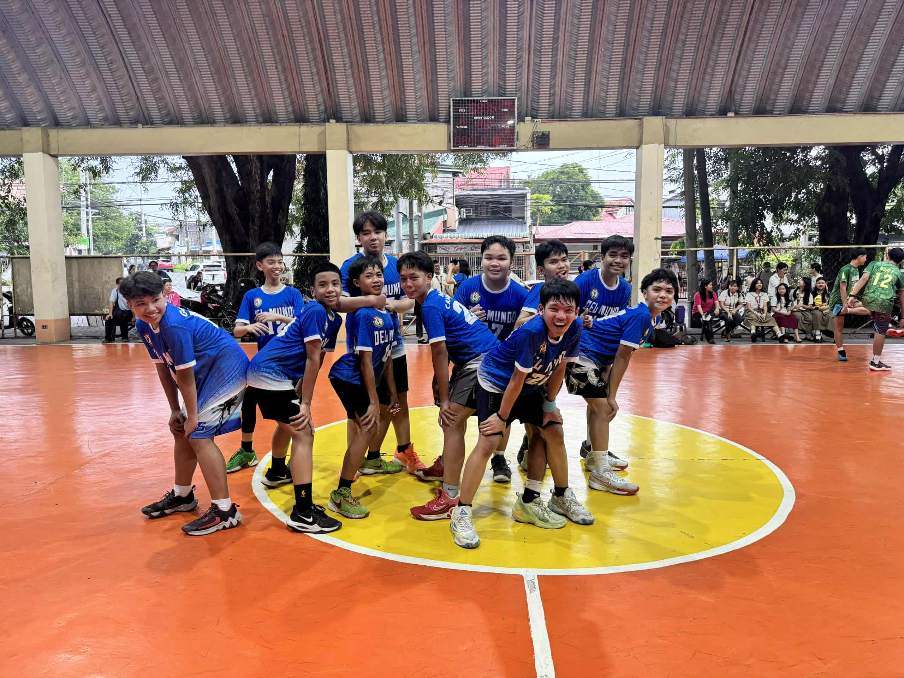
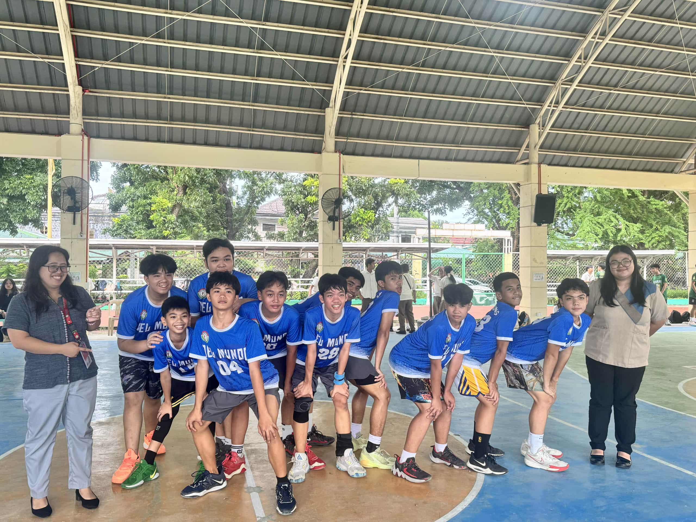

2025-2026
The LPSCI Intramurals celebration taught me that sports are not just about winning but about showing true sportsmanship through teamwork, respect, and humility. I learned that it is important to stay humble when we win and to accept loss with grace, as both experiences help us grow. I actively participated in the event by cheering for my classmates, supporting different teams, and observing how everyone gave their best, regardless of the outcome. These moments helped me understand the deeper values behind sports, such as unity, discipline, and fairness.
If I were to teach this lesson to a classmate, I would focus on the importance of character over competition by sharing real-life examples from the games and encouraging them to reflect on their own actions during challenges. Celebrating events like Intramurals is important because it helps students develop not just physical skills but also positive values that they can carry into real life. I can apply what I learned by treating others with respect during competitions, encouraging my peers, and facing both success and failure with a good attitude. 🏅💖

